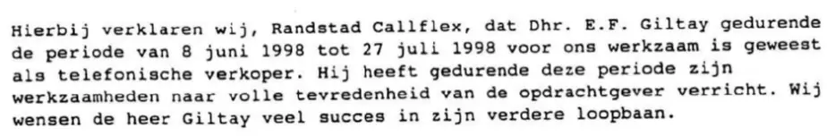

Preuve · Attestation
Recommandation de Randstad Callflex pour Giltay, 20 mai 1999
Le passage
« Par la présente, nous, Randstad Callflex, certifions que M. E.F. Giltay a travaillé pour nous comme télévendeur pendant la période du 8 juin 1998 au 27 juillet 1998. Pendant cette période, il a accompli ses tâches à l’entière satisfaction du client. Nous souhaitons à M. Giltay plein succès pour la suite de sa carrière. » Page 1, le corps de la lettre. Traduit du néerlandais ; le texte original figure ci-dessous.
Texte original
“Hierbij verklaren wij, Randstad Callflex, dat Dhr. E.F. Giltay gedurende de periode van 8 juni 1998 tot 27 juli 1998 voor ons werkzaam is geweest als telefonische verkoper. Hij heeft gedurende deze periode zijn werkzaamheden naar volle tevredenheid van de opdrachtgever verricht. Wij wensen de heer Giltay veel succes in zijn verdere loopbaan.” La lettre ne désigne pas le client par son nom, mais seulement comme « de opdrachtgever » (le client).

Pourquoi ce document compte
La qualification appliquée à Giltay par le ministre de la Défense demeure en ligne aujourd’hui, dans le rapport public du Médiateur national de 1999. On y lit que Giltay aurait été licencié par Casema au bout de trois jours pour « comportement irritant et inadapté ». L’essai y oppose des preuves contraires considérables, dont des recommandations professionnelles des entreprises où il avait travaillé. Cette lettre est l’une de ces recommandations. L’agence d’intérim qui l’employait à l’été 1998 déclare par écrit qu’il a accompli son travail à l’entière satisfaction du client. Son employeur était donc Randstad, et non Casema, où il travaillait comme intérimaire. Casema ne pouvait dès lors pas le licencier, contrairement à ce qu’affirme le ministre, et il n’y a pas non plus été renvoyé au bout de trois jours : il y a travaillé plus de six semaines, jusqu’à fin juillet 1998.
Provenance
- Document
- Lettre de recommandation (déclaration), une page
- Expéditeur
- Randstad Callflex, Steenvoordelaan P 25, 2284 KA Rijswijk
- Destinataire
- E.F. Giltay, La Haye
- Date
- 20 mai 1999
- Objet
- Confirmation du travail effectué comme télévendeur du 8 juin 1998 au 27 juillet 1998
- Signé
- Randstad Callflex ; la signature et le nom qui figure en dessous sont caviardés dans la copie publiée
- Immatriculation
- Fait partie du groupe Randstad ; registre du commerce d’Amsterdam n° 33154723 ; numéro de licence CBA/T 91.1644 ; NEN-ISO 9001/ISO 9001 C-93032
- Langue
- Néerlandais
- Conservé par
- Archives de l’auteur
- Voir aussi
- Rapport 1999/507 du Médiateur national, 17 décembre 1999
Cité dans :
- l’essai « L’interdiction tombée, le livre debout » dans le chapitre (3) « Ce que révèle le livre : la dissimulation autour de Srebrenica »
- la section des voix.
Document : https://
Dernière modification le 13 septembre 2026, consulté le 3 octobre 2026.

Cette page est une fiche de preuve du livre Le Général de dissimulation d’Edwin Giltay et du site web qui l’accompagne.